Costs from real usage, not estimates.
Most energy apps read a single meter and estimate the rest. Corrente takes real, per-circuit usage from your Basis switchboard and accounts for the energy your own solar and battery supplied — so every kilowatt-hour is priced against the grid rate you would have paid, using your Basis retail plan's own peak, shoulder, and off-peak bands.
- Per-circuit usage straight from the Basis switchboard
- Solar & battery attributed before any kWh is billed to the grid
- Retail plan rates across peak, shoulder, and off-peak
- Export credits & amortised costs for solar and battery capital
Features
Home Dashboard
A live, animated diagram of power moving between solar, battery, grid, and home — with your switchboard summary and Powerwall charge and state right below, plus a clear indicator when you're running off the grid.
Energy History
Solar, home load, battery cycles, and grid import and export over time. Switch between hourly, daily, and monthly views, and step back through your history.
Energy Costs
A stacked view of exactly what makes up your spend — peak, shoulder, and off-peak tiers priced correctly, with what appears on your bill alongside the real cost.
Savings & Solar ROI
See the value your solar and battery deliver versus buying from the grid — and track your solar investment paying itself back over time.
Live Switchboard
Every circuit's power, voltage, current, and share of the load — with your own custom circuit labels, synced across the app.
Per-Circuit Detail
See which circuits use the most over any period and attribute real dollar cost down to individual circuits, with MCB, RCD, arc-fault, and temperature status in plain language.
Automations
Rules driven by schedules, battery levels, and free-power windows. Start from a template, then fine-tune triggers, conditions, and actions — automatically set your Powerwall reserve and mode, or suspend and resume circuits.
Feedback & Notifications
Stay in the loop with notifications for what matters, and vote on what we build next.
See it in action
Real screens, real data — pulled straight from the app.
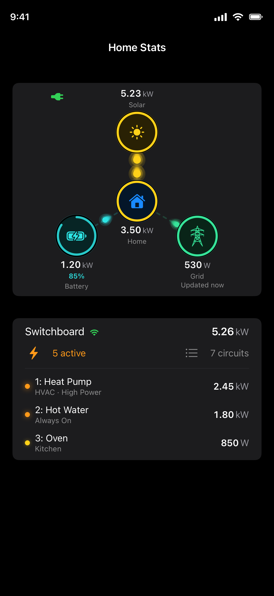
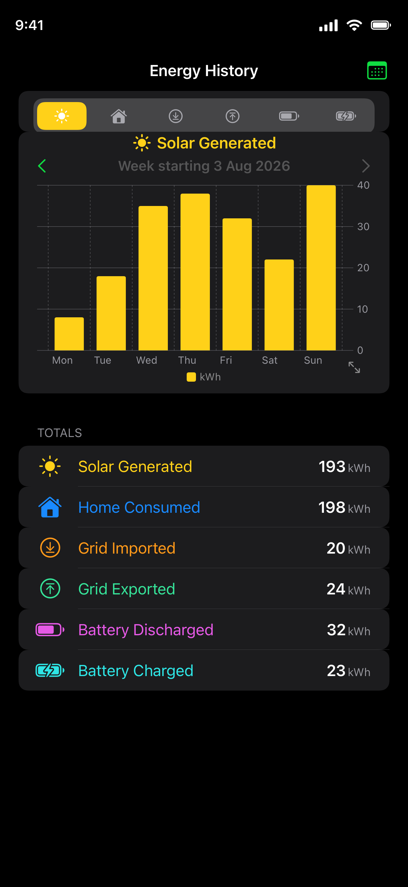
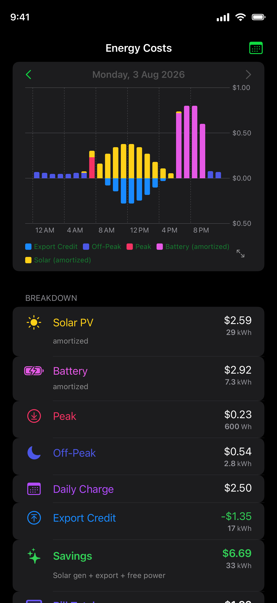
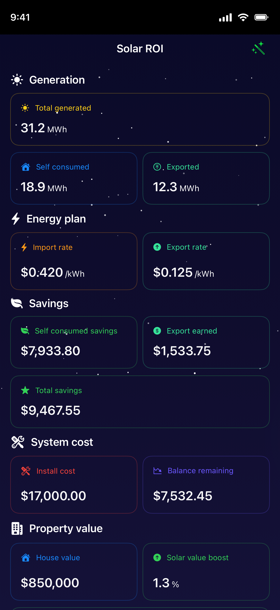
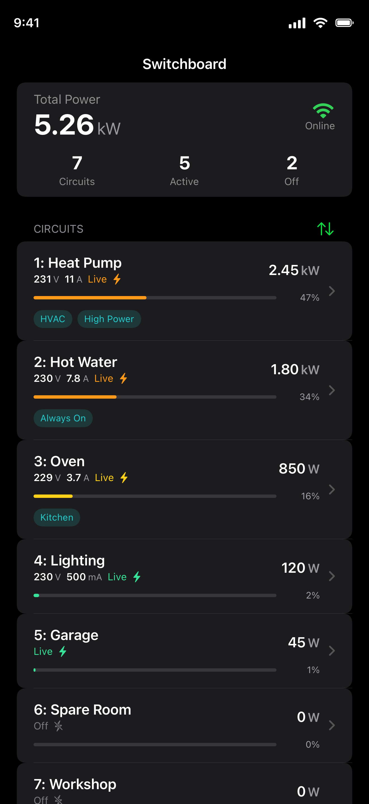
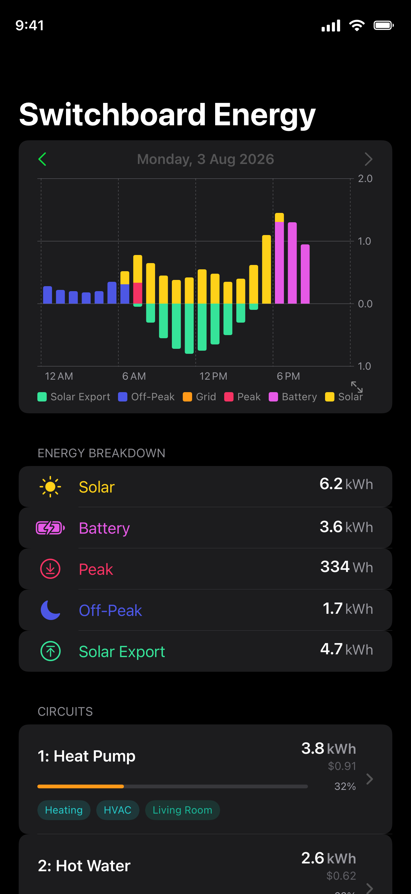
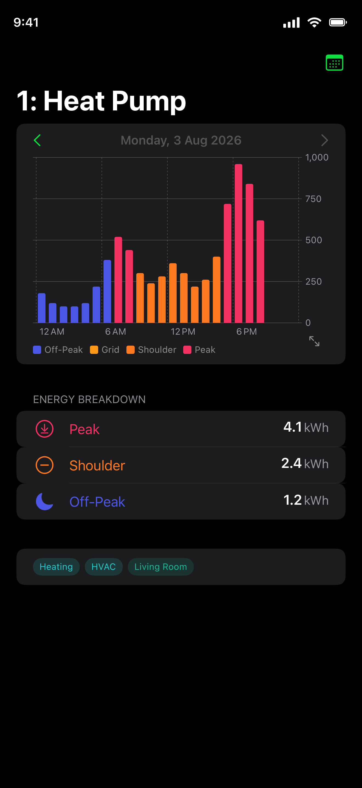
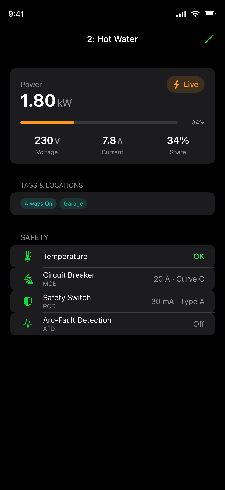
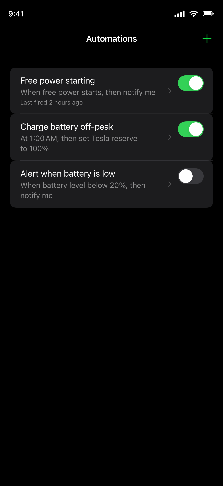
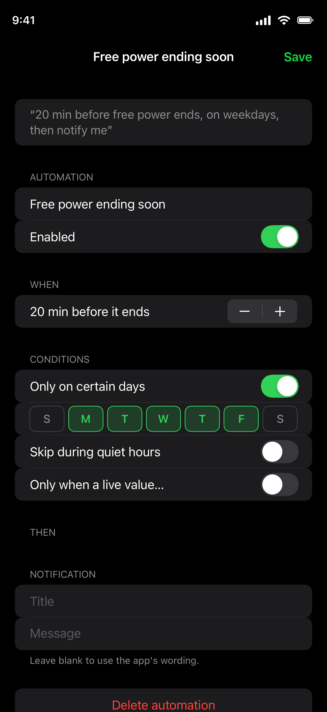
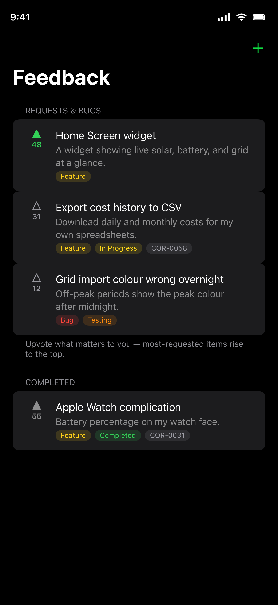
Supported Sources
Corrente connects to the systems you already have — and more are on the way.
Tesla Powerwall
Live status, energy history, battery state of charge, and Storm Mode.
Basis Switchboard
Live circuit power, switchboard and subcircuit history, and your Basis retail plan.
What's next
Corrente is evolving fast. See what we're building, what's in progress, and what's planned — from new sources to deeper cost insights.
Your data stays yours
Corrente reads energy data only from the systems you connect, using each service's own sign-in. Your energy data is anonymised, tied only to your Corrente account — never sold, and never used for advertising.
Now in beta
Corrente is currently in TestFlight beta and free to try while testing. Join the beta. Try it out and let us know what you think.